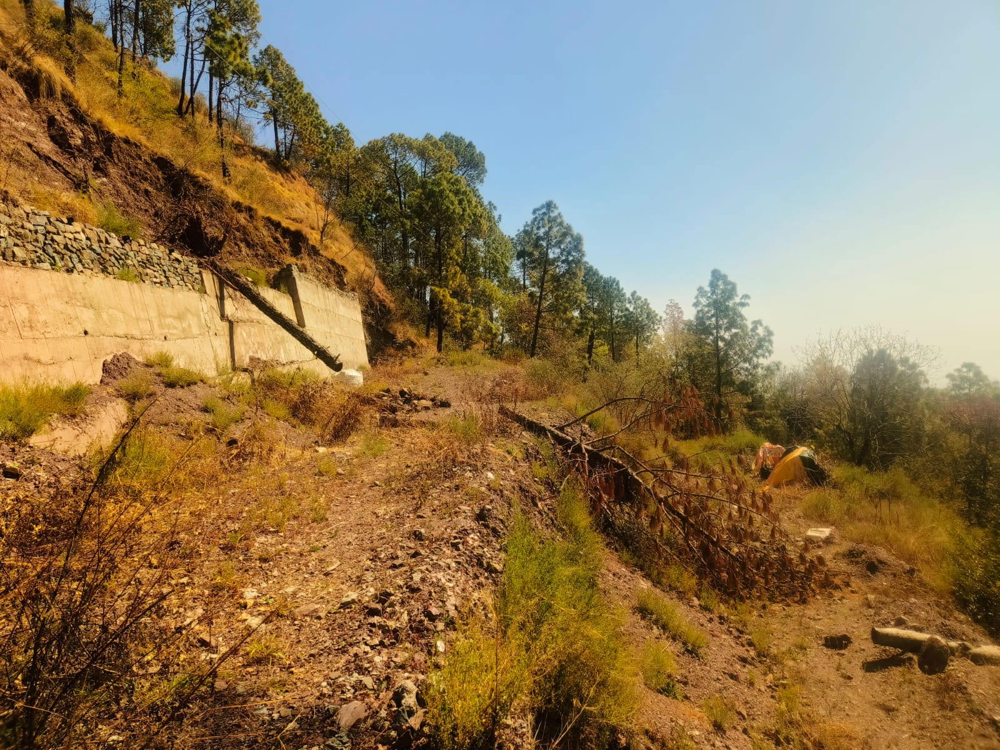

Section 118 Explained: What It Means for a Non-Himachali Buyer

A parcel near Barog with Section 118 already approved and transferable — the kind of clearance this post explains in detail.
What Section 118 actually restricts
Section 118 of the Himachal Pradesh Tenancy and Land Reforms Act, 1972 does not ban land purchases by outsiders outright. It restricts the transfer of land to anyone who is not an agriculturist of Himachal Pradesh, which includes non-Himachali buyers and also non-agriculturist Himachalis. Without the government's prior permission, that transfer cannot go through.
The restriction applies to land classified as agricultural, outside municipal and cantonment limits. It does not apply the same way to built-up property inside those limits, which is the detail that trips up most first-time buyers (more on this below).
Who needs permission, and who doesn't
Needs Section 118 permission: anyone buying agricultural land outside a municipal corporation, municipal committee, notified area committee, or cantonment board, who is not a Himachali agriculturist. This covers most non-Himachali buyers looking at raw land in the hills.
Does not need it:
- Buying or leasing built-up property inside municipal or cantonment limits, including Kasauli's own cantonment area for property within it.
- Buying a plot allotted by a government agency such as the Himachal Pradesh Housing and Urban Development Authority.
- Leasing agricultural or rural land for up to 10 years, a route worth considering if a buyer wants to use land in the hills without going through the permission process at all, though it stops short of ownership.
Himachali agriculturists can buy any class of land without Section 118 permission, subject to the state's land-ceiling and land-use conversion (CLU) rules.
Area limits for a non-agriculturist buyer
A non-agriculturist buyer who gets Section 118 permission is capped at:
- Up to 4 acres for agricultural use
- Up to 500 square metres for residential use
Bigha and biswa sizes vary by area in Himachal Pradesh, so don't convert the 500 sq m figure yourself against a specific listing's bigha count. Get the exact area confirmed in square metres against the sale deed before assuming a parcel fits inside the residential cap.
The application process, step by step
- Land classification certificate. Get this from the local Patwari or Tehsildar, confirming the land carries no dispute, encumbrance, or government prohibition.
- Online application. File through the state's Section 118 portal with personal details and supporting documents.
- Purpose statement. State the specific intended use: residential construction, tourism, horticulture, or another category.
- Project plan and proof of capacity. Submit a plan or business case, with proof of qualifications, experience, and financial capacity to actually use the land as stated.
- Review. The District Revenue Office reviews the file and forwards it to the State Government, which makes the final call. Approval isn't automatic; the government has no obligation to grant it.
- Timeline. Typically 6 to 12 months, though this varies by district and how complete the application is.
- Condition on approval. The land must be put to the approved use within 2 years, extendable by up to one more year.
What makes approval more or less likely
Approval turns on the government being satisfied with the stated purpose and the applicant's ability to deliver it, which leaves real discretion in the process. Commercial and tourism-purpose applications tend to move more smoothly than pure residential ones, since they come with a business case and project plan attached, something a simple holiday-home purchase doesn't naturally have on its own. Local property dealers quoted by the Tribune describe applications being rejected at the District Commissioner's office over incomplete documents or missing NOCs, and a former Shimla deputy mayor quoted in the same piece says approval tends to go more easily to applicants with existing influence. Worth knowing going in, not something this brokerage can change, and a reason to have the paperwork genuinely complete before filing rather than hoping it gets waved through.
The benami warning
Some buyers, frustrated by the timeline or an unclear purpose fit, are tempted to simply buy land in a local Himachali's name to skip the process entirely. This is a criminal offence under the Benami Transactions (Prohibition) Act, carrying prison time and fines, and the property itself can be confiscated by the government. It is not a shortcut worth taking, however tempting the delay makes it look.
The amendment that's still pending
A bill to simplify Section 118 was introduced in the Himachal Pradesh Vidhan Sabha in late 2025. As of the most recent reporting found, it had been referred to a Select Committee for detailed review rather than passed, with one report noting the committee was expected to report back in a later budget session. No confirmation of final passage has turned up in research for this piece. This is an active legislative process, not settled law, so anyone relying on a specific provision of the proposed amendment should confirm its current status directly rather than from this post.
What this means for buyers looking at Kasauli specifically
Kasauli itself is a cantonment town, so built-up property within its cantonment limits generally falls under the exemption above and doesn't need Section 118 permission. Land outside those limits, which covers most of the larger parcels and some cottages in the surrounding belt, still does.
There's also a Kasauli-specific wrinkle worth knowing: because it's a cantonment area, some long-settled local residents are treated as non-Himachali for the purposes of this Act, in a way that wouldn't apply in a non-cantonment town. That detail can change a deal's timeline and should be confirmed with a local revenue advocate before any serious negotiation, not assumed from general reading. Our earlier guide on land for resorts and hospitality development covers this in more depth for larger, development-scale purchases.
One more thing worth flagging plainly: when a listing says Section 118 permission is "already approved," confirm with the seller's documentation, and with your own advocate, exactly what that covers, whether it's a clearance already in the seller's name for a specific use, and whether a new buyer still needs a fresh application for the transfer itself. Don't assume an existing approval automatically carries over to a new owner without checking.
Looking at a parcel near Barog with Section 118 already approved and easily transferable, 2 km from Deodghat? It's well suited to an independent villa or cottage.
See current Kasauli listingsFrequently asked questions
Can a non-Himachali buy land in Himachal Pradesh at all?
Yes, but for agricultural land outside municipal and cantonment limits, prior government permission under Section 118 is required first.
Do I need Section 118 permission to buy a cottage in Kasauli town?
Generally not, if it's built-up property within Kasauli's cantonment limits. Land outside those limits, or land not yet classified as non-agricultural, generally does need it. Confirm the specific parcel's status before assuming either way.
How long does Section 118 approval take?
Typically 6 to 12 months, though it varies by district and application completeness.
Is there a limit on how much land a non-agriculturist can buy?
Up to 4 acres for agricultural use, and up to 500 square metres for residential use, once permission is granted.
Can I just buy land in a local's name to avoid the process?
No. That's a benami transaction, a criminal offence with prison time, fines, and the property can be confiscated.
Is Section 118 about to change?
An amendment bill is under review by a Select Committee as of the most recent reporting available. It hasn't passed as settled law yet, so don't rely on a specific proposed change until it's confirmed.